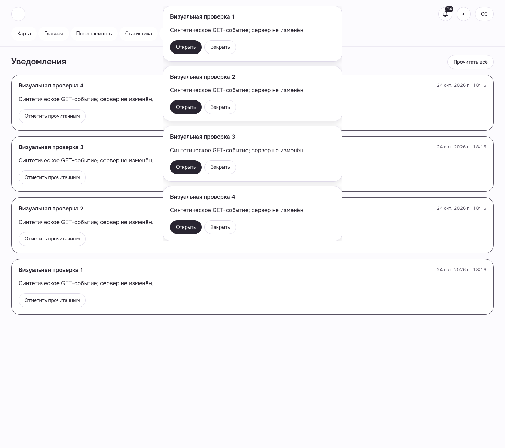
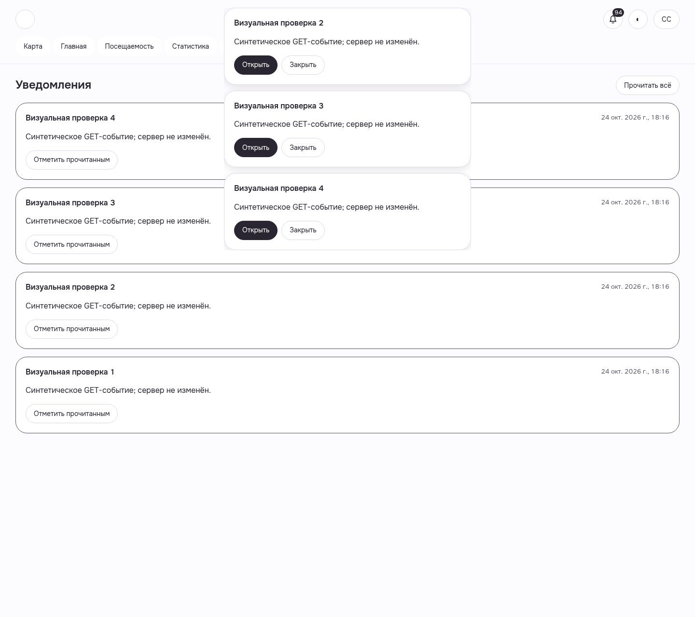
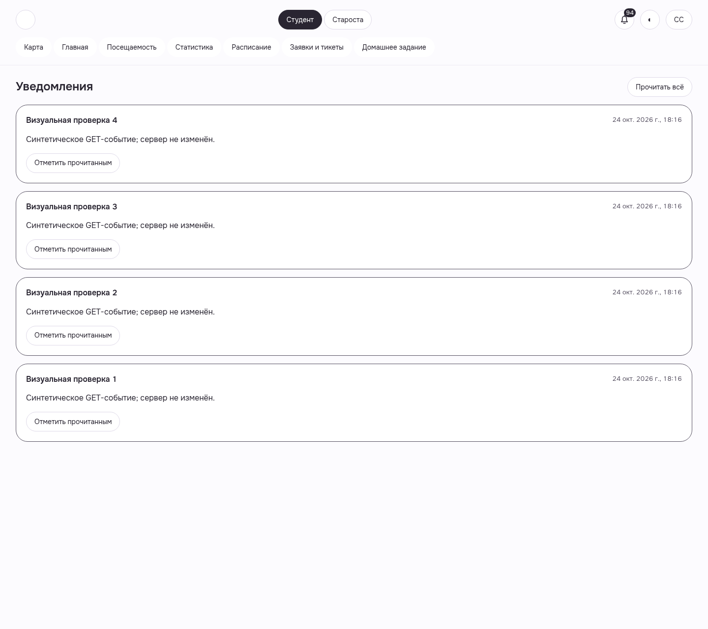
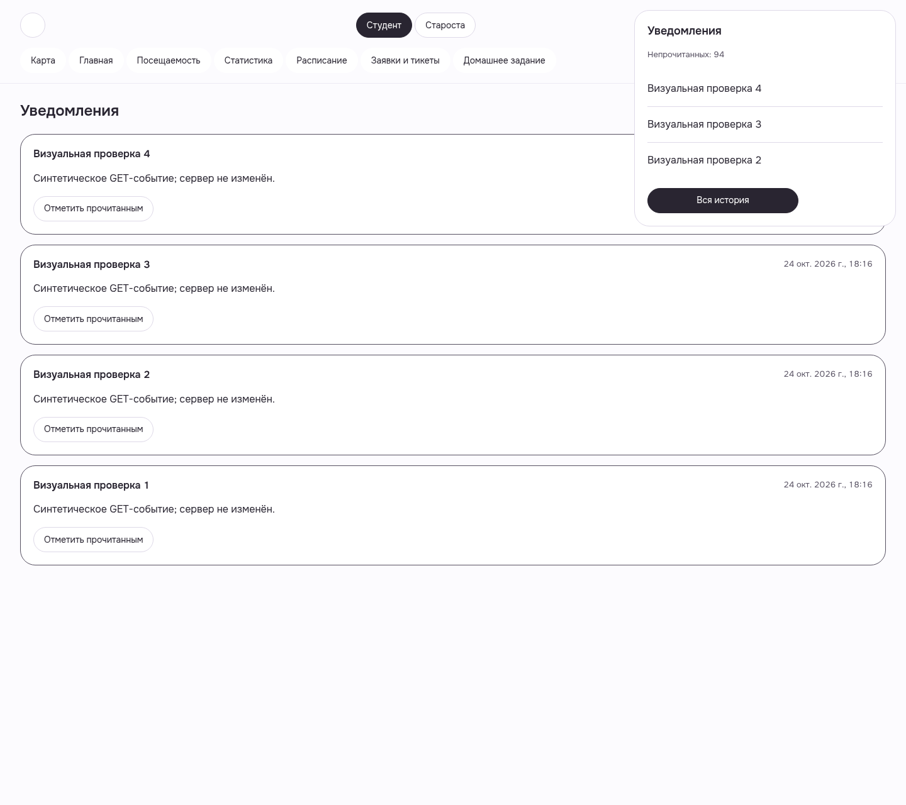
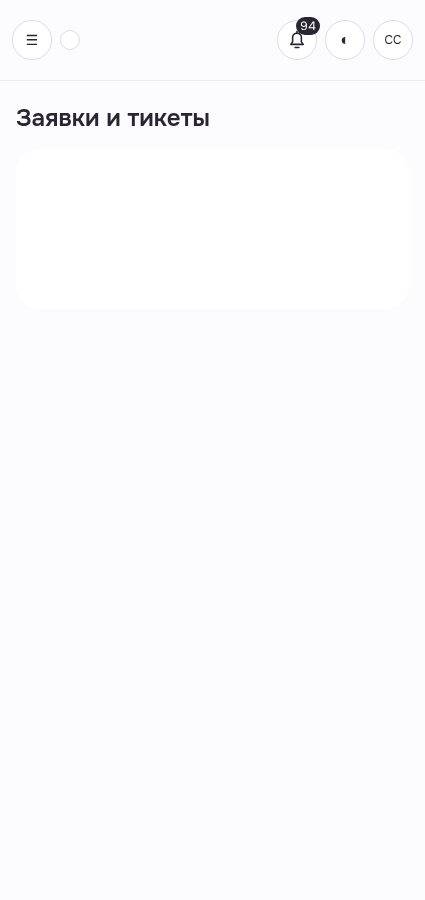
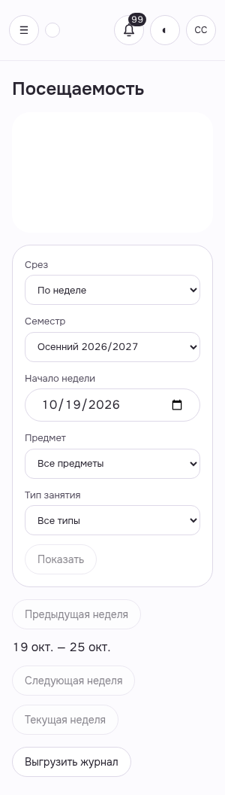
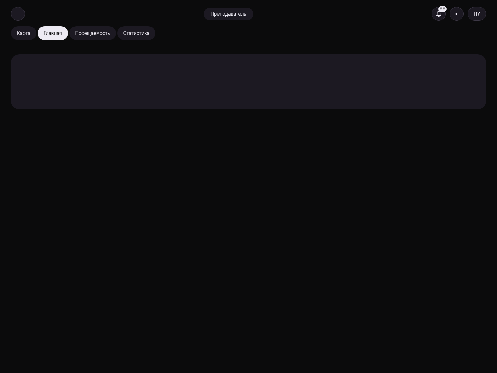

Уведомления: четыре новых toast сохраняются
four fresh GET items via syntheticfocus actual app listener; all4 retained
WEB-SHARED-NOTIFICATIONS__postfix-synthetic-toast-4__light__1440__77fbd7a5e

7 реальных кадров source77f; browser-only синтетические GET/focus. Четыре toast сохраняются10.127/10.089/10.176/9.987s; история4 и bell preview3 сохранены. Student425light, Headman300light, Teacher1440dark skeleton подтверждены. Все собственные сессии закрыты204/401. Это ограниченный visual PASS, не всей роли/тем/адаптива.
Manifest · До исправления · Все галереи
four fresh GET items via syntheticfocus actual app listener; all4 retained
WEB-SHARED-NOTIFICATIONS__postfix-synthetic-toast-4__light__1440__77fbd7a5e

one toast reached ownTTL; later arrivals retained; browser-only synthetic inputs
WEB-SHARED-NOTIFICATIONS__postfix-first-individual-expiry__light__1440__77fbd7a5e

all4 independently expired; four actual rendered historycards retained
WEB-SHARED-NOTIFICATIONS__postfix-all-expired-history__light__1440__77fbd7a5e

bell preview3 and fullhistory4 after independentTTL; separate policies
WEB-SHARED-NOTIFICATIONS__postfix-bell-history__light__1440__77fbd7a5e

actual initial GET held in browser; skeleton rendering; no backend failure claim
WEB-STUDENT-REQUESTS__postfix-synthetic-loading__light__425__77fbd7a5e

actual initial GET held in browser; skeleton rendering; no backend failure claim
WEB-HEADMAN-JOURNAL__postfix-synthetic-loading__light__300__77fbd7a5e

actual initial GET held in browser; skeleton rendering; no backend failure claim
WEB-TEACHER-HOME__postfix-synthetic-loading__dark__1440__77fbd7a5e
